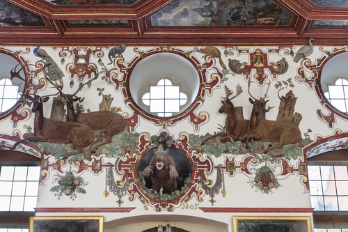
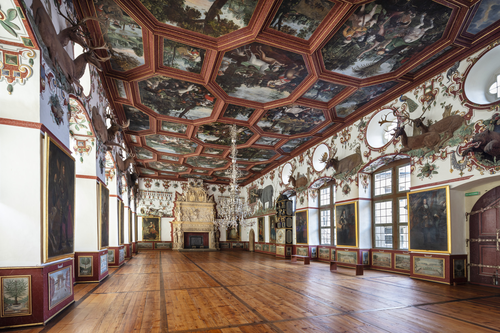

Der Große Saal (Rittersaal)
Wikibase link: https://computational-publishing-service.wikibase.cloud/entity/Q209
Kurator: Seeger, Ulrike
Bau-, Ausstattungs- und Funktionsgeschichte
Die hervorragend erhaltene wandfeste Ausstattung des Großen Saals, der 1639 als „großer Saahl“ [1] geführt wurde und seinen heute geläufigen Namen Rittersaal erst im Nachhinein erhielt, datiert aus den Jahren 1601 bis 1605. Am Beginn stand den Quellen zufolge der monumentale Saalkamin. Der Vertrag mit dem Bildhauer Michael Juncker aus Miltenberg datiert vom 7. September 1601.[2] Im November 1601 wurden mit Balthasar Katzenberger die Deckengemälde verdingt, der die Arbeiten 13 Monate später Anno 1602 abschloss.[3] 1603 signierte und datierte der Kalkschneider Gerhard Schmidt das Portal an der inneren Ostseite.[4] Die Jahreszahl 1605 zusammen mit den Initialen CL für den Kalkschneider Christoph Limmerich über der Tür zum Altan markieren den Abschluss der Arbeiten.[5]
Seit 1710/11 wurde der Saal unter Graf Carl Ludwig behutsam dem barocken Zeitgeschmack angepasst und inhaltlich vom Jagd- zum gräflichen Rittersaal umgedeutet. Christian Thalwitzer hatte Balthasar Katzenbergers Deckengemälde „im großen Saal [zu] übermahlen, genau durch[zu]gehen und wo es Schaden genommen, mit allem Fleyß“ auszubessern.[6] Bei dieser Gelegenheit versah er die Gemälderahmen und die dazwischenliegenden Stuckrippen mit der bis heute gültigen roten Marmorierung.[7] An den Wänden wurden die Roll- und Beschlagwerkkartuschen der Schmuckzone ebenfalls rot marmoriert und an Kamin und Innenportal die rot marmorierten Schattenrahmen hinzugefügt.
In einem zweiten Schritt wurde der Sockel ringsum mit rot marmorierten Lambris versehen, die Christian Thalwitzer im Rechnungsjahr 1715/16 mit 51 Schloss- und Gartenveduten im Querformat[8] und 27 Orangenbäumen und anderen exotischen Kübelpflanzen im Hochformat bemalte. Die 12 ganzfigurigen Porträts männlicher Vorfahren zum Teil in Ritterrüstung, die dem Rittersaal seinen heutigen Namen gaben, schuf bereits 1710 Peter Franz Tassaert aus Rothenburg.[9]
Beschreibung des Raumes
Der 36,4 Meter lange, 11,7 Meter breite und 8,25 Meter hohe Saal[10] wird durch hohe segmentbogenförmige Fensternischen gegliedert, deren Achsen von großen Okuli weitergeführt werden. Im Gegenzug zu dieser Vertikalen beschränkt sich der reiche Stuckdekor friesartig auf die obere Wandzone, die oberhalb eines Gesimses auf der Höhe des oberen Drittels der Fenster beginnt. Dadurch, dass sich die Stuckdekoration in das obere Drittel der Fensterlaibungen hineinzieht, erwecken sie den Eindruck hoheitsvoll gestelzter Bögen.[11]
An der Westwand, neben der im ersten Joch der Hofseite der Saal über die Wendeltreppe betreten wird, erhebt sich ein monumentaler Kamin. Mit Kaminöffnung, Attikafeld und rundbogigem Auszug umfasst er drei Zonen, von denen Attika und Auszug in der Höhe der stuckierten Wandzone des Saals entsprechen. An der Ostwand, wo man den Saal Richtung Tafelstube verlässt, befindet sich ein prächtiges, 1603 datiertes stuckiertes Innenportal des Kalkschneiders Gerhard Schmidt.[12] Darüber verläuft, teilweise hinter dem Attikarelief, eine Empore beispielsweise für Musiker.
Den Kamin flankieren stuckierte Darstellungen des Grafenpaars Wolfgang II. von Hohenlohe und Magdalena, geborene Prinzessin von Nassau-Katzenelnbogen mit ihrer jeweiligen Ahnenprobe.[13] Dem Graf wurde die zeremoniell höherrangige Seite heraldisch rechts des Kamins, der Gräfin die Seite heraldisch links des Kamins zugeteilt. Graf und Gräfin liegen jeweils auf der Seite einander abgewandt und blicken mit aufgestütztem Kopf in den Saal. Aus ihnen heraus wächst in der Art einer Wurzel Jesse die über fünf Generationen geführte Ahnenprobe. Der Graf trägt eine Rüstung mit Waffenrock und stützt seinen Ellenbogen auf einen Helm. Die Gräfin hat zwei Kinder im Arm, von denen das vordere ein Junge ist.
An den beiden Längsseiten nimmt die stuckierte Schmuckzone weit vorkragende, gleichfalls stuckierte Wandskulpturen wilder Tiere auf. Sie beziehen sich einerseits auf das Programm der Decke, das der höfischen Jagd in all ihren Ausformungen gewidmet ist. Andererseits sind sie auf die Kaminwand ausgerichtet, die mit ihren nachstehend zu erläuternden Bildthemen als Stellvertreter des Grafen, seiner konfessionellen Einstellung und seiner dynastischen Herkunft konzipiert ist. Zusammen mit einer gemalten Darstellung des lyraspielenden Orpheus an der Decke erlauben die Tiere in ihrer Ausrichtung auf den Kamin die Identifikation des Grafen mit Orpheus als Sinnbild des guten Herrschers. Diese hier erstmals entwickelte Deutung wird unten im Abschnitt „Programm und Synthese der Saalausstattung der Renaissance“ vorgetagen.
Kamin und Innenportal
Der Kamin aus Andernacher Tuffstein von Michael Juncker und seinen Söhnen Hans und Zacharias aus Miltenberg präsentiert im Hauptrelief als zentrales Motiv die persönliche Devise des Grafen Wolfgang. Die Entschlüsselung der im Vertrag vom September 1601 vereinbarten „ihrer gnaden Diviso“[14] gelang erst vor wenigen Jahren Jürgen Kniep.[15] Dargestellt ist ein antikisch gekleideter Krieger, umgeben von den Symbolen der Kardinal- und theologischen Tugenden. Die Devise „Gott gibt Glück“ lässt den reformatorischen Glauben des Grafen Wolfgang ebenso erkennen wie die Betonung der Liebe (Herz in der linken Hand des Kriegers) und des Buches, aus dem die Schlange ihre Weisheit bezieht. Im Sinne der protestantischen Rechtfertigungslehre oblag es nicht dem Klerus, sondern allein Gott, dem Menschen Gnade angedeihen zu lassen.
Als räumliches Gegenstück zum skulptierten Kamin entstand 1603 in einem Paragone der Techniken und Materialien das monumentale, aus Stuck gefertigte Innenportal an der Ostseite. Sein Aufbau ist wie der Kamin dreizonig mit rundbogiger Öffnung, Attikarelief und Auszug. Der Kalkschneider Gerhard Schmidt, der das Portal selbstbewusst mit seinen Initialen signiert hat, hat in der Türkenschlacht des Hauptreliefs mit extrem hinterschnittenen Pferde- und Soldatenleibern den moderater skulptierten Steinkamin an Kunstfertigkeit übertroffen. Einen Höhepunkt der Stuckateurskunst der Zeit bildet der vollplastisch gearbeitete heilige Georg auf seinem zum Sprung über den Drachen ansetzenden Pferd.
Das Portal ist inhaltlich auf den ältesten Sohn des Grafen Wolfgang, Georg Friedrich, zu beziehen, der im Rang eines Obristen des Fränkischen Reichskreises und auch der kaiserlichen Armee im Langen Türkenkrieg (1593–1606) kämpfte.[16] Als einer seiner größten Erfolge gilt die versuchte Einnahme der Festung Gran (Eszergom) im Jahr 1594, an der er als kaiserlicher Obrist beteiligt war.[17] Die Festung, vor der sich auf dem Relief das Schlachtengetümmel abspielt, stellt in der Tat Eszergom da, was an der Höhenlage und der Zweiturmfassade der Kathedrale zu erkennen ist.[18] Der das Portal bekrönende heilige Georg als Drachentöter mit Lanze und zugleich Namenspatron des Erbprinzen sowie Patron der Stadtkirche wäre im Sinne des Protestantismus als tugendhafter Bezwinger des Bösen zu deuten.[19] Mit der Thematik des Langen Türkenkriegs bereitete das Portal auf die dahinterliegende Tafelstube vor, für deren Decke Balthasar Katzenberger 12 große Belagerungsszenen auf Leinwand malte.
Das Portal von 1603 war aber nicht nur heroisch gestimmt. In den Zwickeln lagern Putti, die als Mahnung an die Endlichkeit des Lebens dem Betrachter ein Stundenglas, eine Sense und einen Schlüssel – vielleicht ins Himmelreich – vor Augen halten.
Das Mobiliar
Die renaissancezeitliche Ausstattung des Saals mit Mobilien geht aus einem 1625–1627 aufgenommenen Inventar hervor.[20] Die als erstes genannten „Ein und zwanzig Stuck goldt uf Leder tappezerey“ dürften als goldgeprägte Ledertapeten die Trumeaus zwischen den Fenstern geziert haben. Ledertapeten waren kostbar, was sich in ihrer erstplatzierten Nennung niederschlug.[21] An Stellmöbeln beinhaltete der Saal „Zwo lange Tafel“ und „Ein und dreissig von goldt uff Lederne Sessel“. Die Wände schmückten zusätzlich zu den Ledertapeten „Sechzehn gemahlte Tafeln“, also im Sujet nicht näher charakterisierte Gemälde. Die Beleuchtung erfolgte über „Acht große hülzerne Lichter, gemahlt“.
Vier Gemälde wurden zusätzlich zu den sechzehn aufgeführt, da sie vermutlich im Vorgängerinventar des Grafen Wolfgang, das dem Inventar als Vorlage diente, noch nicht enthalten waren. Sie stellten „Kaiser Matthie und der Kayserin / Item Meines Gnd. Herrn und gnl. Frawen Abcontrafehung“ dar. Kaiser Matthias regierte in den Jahren 1612–1619, seine Gemahlin Anna von Österreich-Tirol starb 1618. Die Gemälde stammten demnach aus der Zeit des Grafen Georg Friedrich von Hohenlohe-Weikersheim, der mit Eva von Waldstein verheiratet war.
[1] HZAN La 130 Bü 152, Schadensinventar von 1639. Die Kenntnis und die Transkription dieser Archivalie verdankt die Autorin Frieder Leipold.
[2] Der erhaltene Vertrag (HZAN We 50 D6) in Transkription bei Freeden, Kamin, 1950, S. 144–145. Bezahlt wurde Juncker im Oktober 1602.
[3] Poser, Deckenbilder, 1980, S. 160–161.
[4] Merten, Weikersheim, o. J., S. 44. Drös, Inschriften Mergentheim, 2002, S. 244. Zum Oeuvre und Lebensweg des Kalkschneiders Gerhard Schmidt: Kreder, Hellenstein, 2005/2006; Rinn-Kupka, Stuck, 2018, S. 126–129; Lange, ‚welsche Kamin‘, 2019.
[5] Merten, Weikersheim, o. J., S. 44. Drös, Inschriften Mergentheim, 2002, S. 254.
[6] Fandrey, Weikersheim, 2010, S. 55.
[7] Dieser Befund kam bei der Restaurierung der Jahre 1995–1997 zutage. Für zahlreiche Informationen und die Übermittlung des Abschlussberichts vom 05.03.1998 dankt die Autorin Herrn Dipl.-Ing. Erik Reinhold, Staatliches Hochbauamt Heilbronn.
[8] Die Vedute des Carlsberg bei Weikersheim kam erst 1747 im Zusammenhang mit der damals aufgestellten Kunstuhr hinzu, doch dürfte sie eine ältere Vedute am Fensterpfeiler hinter der Uhr ersetzt haben.
[9] Valentin, Malerische Lebensläufe, 2019, Anm. 11. Zu Tassaert liegt ein Lebenslauf mit Werkverzeichnis vor: Schnurrer, Tassaert, 2014.
[10] Die genauen Maße gibt Walther-Gerd Fleck (Weyer, Georg Stegle, 2017, S. 52).
[11] Vgl. dagegen Gebeßler, Saal Süddeutschland, 1957, S. 49, der die Fensternischen aufgrund ihrer Dekoration als Anräume empfindet.
[12] Das Portal wird in der Literatur zu Unrecht als Eingangsportal in den Saal beschrieben (Poser, Deckenbilder, 1980, S. 160; Kniep, Glück, 2005, S. 52 und 59; Käpplinger, Jagd, 2011, S. 73). Es ist jedoch nach innen gerichtet, führt also von innen nach außen. Außerdem folgt in der Wegeführung eines Renaissanceschlosses die Tafelstube auf den Rittersaal. Auch der Betrachterstandpunkt der Deckengemälde ist mit dem Rücken zum Kamin so ausgerichtet, dass man die Bilder vom Kamin kommend, Richtung Tafelstube gehend bewundert.
[13] Zu den Ahnenproben: Drös, Inschriften Mergentheim, 2002, S. 255–261. Außerdem Kniep, Glück, 2005, S. 48–52.
[14] Freeden, Kamin, 1950, S. 144.
[15] Kniep, Glück, 2005, S. 57–74. Weiterführende Gedanken und Literatur zur Bildhauerfamilie Juncker liefert: Lange, ‚welsche Kamin‘, 2019.
[16] Kniep, Glück, 2005, S. 52–57. Außerdem Findbuch HZAN La 130 Bü 102 (Bestallung zum Obristen des Fränkischen Reichskreises, 1598) und La 130 Bü 108 (Teilnahme als kaiserlicher Obrist am Feldzug gegen die Türken 1603).
[17] Trentin-Meyer, Georg Friedrich von Hohenlohe, 2019, S. 90. Vgl. Niederkorn, Langer Türkenkrieg, 1993, S. 11.
[18] Außerdem als Beleg die Darstellung in: Ortelius, Chronologia, 1602, Tf. „Wahre Contrafactur der Belagerung Gran, sampt der Schlacht so dabei geschehen, den 3. Augusti. Anno 1595“. Ortelius wählte für seine Illustration die erfolgreiche Belagerung und Schlacht von 1595. Die Belagerung von 1594 war für die Kaiserlichen noch nicht erfolgreich.
[19] Kniep, Glück, 2005, S. 56.
[20] Auszüge des Inventars stellte freundlicherweise Dinah Rottschäfer der Autorin zur Verfügung.
[21] Bei dem von Käpplinger, Auf’s Schönste, 2019, S. 189 mit Anm. 3 genannten Inventar von 1634 handelt es sich um einen Schadensbericht, in dem die Ledertapeten verkürzt als „tappezereien von gold“ bezeichnet wurden, was Käpplinger in Unkenntnis des Vorgängerinventars als textile Wandbespannungen deutete.
Wikibase link: https://computational-publishing-service.wikibase.cloud/entity/Q212
Title: Rittersaal & Raum 72 – nach Westen
Year: 2018
Description: Teil von: Schloss Weikersheim SaalbauWolfgang Beringer, Baumeister & Steinmetz - Georg Stegle, Baumeister - Entwurf: Georges Robin, Architekt - Elias Gunzenhäuser, Zimmermann - Weikersheim, Marktplatz 11 - ab 1595

Wikibase link: https://computational-publishing-service.wikibase.cloud/entity/Q213
Title: Löwenpaar – Gesamtansicht
Year: 2018
Description: Gerhardt Schmidt, Bildhauer - Mitarbeit: Christoph Limmerich, Bildhauer - Mitarbeit: Caspar Dieterich, Fassmaler - Weikersheim, Schloss Weikersheim, Rittersaal & Raum 72 - Vollendung: 1605 - 1747

Wikibase link: https://computational-publishing-service.wikibase.cloud/entity/Q214
Title: Bär – Gesamtansicht
Year: 2018
Description: Gerhardt Schmidt, Bildhauer - Mitarbeit: Christoph Limmerich, Bildhauer - Mitarbeit: Caspar Dieterich, Fassmaler - Weikersheim, Schloss Weikersheim, Rittersaal & Raum 72 - Vollendung: 1605 - 1747

Wikibase link: https://computational-publishing-service.wikibase.cloud/entity/Q215
Title: Hirschpaare – Gesamtansicht
Year: 2018
Description: Gerhardt Schmidt, Bildhauer - Mitarbeit: Christoph Limmerich, Bildhauer - Mitarbeit: Caspar Dieterich, Fassmaler - Weikersheim, Schloss Weikersheim, Rittersaal & Raum 72 - Vollendung: 1605 - 1747

Wikibase link: https://computational-publishing-service.wikibase.cloud/entity/Q216
Title: Affe – Gesamtansicht
Year: 2018
Description: Gerhardt Schmidt, Bildhauer - Mitarbeit: Christoph Limmerich, Bildhauer - Mitarbeit: Caspar Dieterich, Fassmaler - Weikersheim, Schloss Weikersheim, Rittersaal & Raum 72 - Vollendung: 1605 - 1747

Wikibase link: https://computational-publishing-service.wikibase.cloud/entity/Q200
Title: Rittersaal & Raum 72 – nach Osten
Year: 2018-01-01T00:00:00Z
Description: Teil von: Schloss Weikersheim Saalbau Wolfgang Beringer, Baumeister & Steinmetz - Georg Stegle, Baumeister - Entwurf: Georges Robin, Architekt - Elias Gunzenhäuser, Zimmermann - Weikersheim, Marktplatz 11 - ab 1595

Wikibase link: https://computational-publishing-service.wikibase.cloud/entity/Q211
Title: Rittersaal & Raum 72 – nach Osten
Year: 2018-01-01T00:00:00Z
Description: Teil von: Schloss Weikersheim SaalbauWolfgang Beringer, Baumeister & Steinmetz - Georg Stegle, Baumeister - Entwurf: Georges Robin, Architekt - Elias Gunzenhäuser, Zimmermann - Weikersheim, Marktplatz 11 - ab 1595

Wikibase link: https://computational-publishing-service.wikibase.cloud/entity/Q212
Title: Rittersaal & Raum 72 – nach Westen
Year: 2018-01-01T00:00:00Z
Description: Teil von: Schloss Weikersheim SaalbauWolfgang Beringer, Baumeister & Steinmetz - Georg Stegle, Baumeister - Entwurf: Georges Robin, Architekt - Elias Gunzenhäuser, Zimmermann - Weikersheim, Marktplatz 11 - ab 1595

Wikibase link: https://computational-publishing-service.wikibase.cloud/entity/Q213
Title: Löwenpaar – Gesamtansicht
Year: 2018-01-01T00:00:00Z
Description: Gerhardt Schmidt, Bildhauer - Mitarbeit: Christoph Limmerich, Bildhauer - Mitarbeit: Caspar Dieterich, Fassmaler - Weikersheim, Schloss Weikersheim, Rittersaal & Raum 72 - Vollendung: 1605 - 1747

Wikibase link: https://computational-publishing-service.wikibase.cloud/entity/Q214
Title: Bär – Gesamtansicht
Year: 2018-01-01T00:00:00Z
Description: Gerhardt Schmidt, Bildhauer - Mitarbeit: Christoph Limmerich, Bildhauer - Mitarbeit: Caspar Dieterich, Fassmaler - Weikersheim, Schloss Weikersheim, Rittersaal & Raum 72 - Vollendung: 1605 - 1747

Wikibase link: https://computational-publishing-service.wikibase.cloud/entity/Q215
Title: Hirschpaare – Gesamtansicht
Year: 2018-01-01T00:00:00Z
Description: Gerhardt Schmidt, Bildhauer - Mitarbeit: Christoph Limmerich, Bildhauer - Mitarbeit: Caspar Dieterich, Fassmaler - Weikersheim, Schloss Weikersheim, Rittersaal & Raum 72 - Vollendung: 1605 - 1747

Wikibase link: https://computational-publishing-service.wikibase.cloud/entity/Q216
Title: Affe – Gesamtansicht
Year: 2018-01-01T00:00:00Z
Description: Gerhardt Schmidt, Bildhauer - Mitarbeit: Christoph Limmerich, Bildhauer - Mitarbeit: Caspar Dieterich, Fassmaler - Weikersheim, Schloss Weikersheim, Rittersaal & Raum 72 - Vollendung: 1605 - 1747

Wikibase link: https://computational-publishing-service.wikibase.cloud/entity/Q200
Title: Rittersaal & Raum 72 – nach Osten
Year: 2018
Description: Teil von: Schloss Weikersheim Saalbau Wolfgang Beringer, Baumeister & Steinmetz - Georg Stegle, Baumeister - Entwurf: Georges Robin, Architekt - Elias Gunzenhäuser, Zimmermann - Weikersheim, Marktplatz 11 - ab 1595

Wikibase link: https://computational-publishing-service.wikibase.cloud/entity/Q211
Title: Rittersaal & Raum 72 – nach Osten
Year: 2018
Description: Teil von: Schloss Weikersheim SaalbauWolfgang Beringer, Baumeister & Steinmetz - Georg Stegle, Baumeister - Entwurf: Georges Robin, Architekt - Elias Gunzenhäuser, Zimmermann - Weikersheim, Marktplatz 11 - ab 1595

C:\Users\worthingtons\AppData\Local\Packages\PythonSoftwareFoundation.Python.3.11_qbz5n2kfra8p0\LocalCache\local-packages\Python311\site-packages\VizKG\utils\util.py:89: UserWarning: Could not infer format, so each element will be parsed individually, falling back to `dateutil`. To ensure parsing is consistent and as-expected, please specify a format.
dataframe[column] = dataframe[column].astype('datetime64')
C:\Users\worthingtons\AppData\Local\Packages\PythonSoftwareFoundation.Python.3.11_qbz5n2kfra8p0\LocalCache\local-packages\Python311\site-packages\VizKG\utils\util.py:89: UserWarning: Could not infer format, so each element will be parsed individually, falling back to `dateutil`. To ensure parsing is consistent and as-expected, please specify a format.
dataframe[column] = dataframe[column].astype('datetime64')